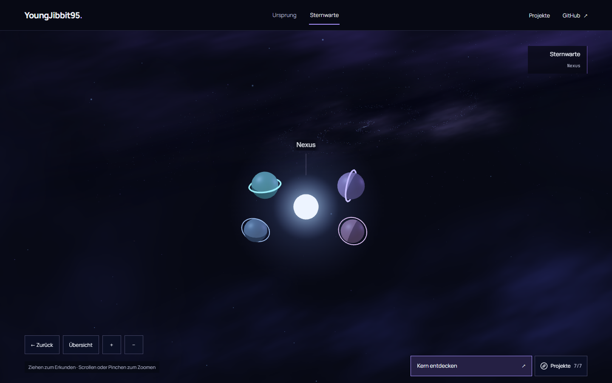
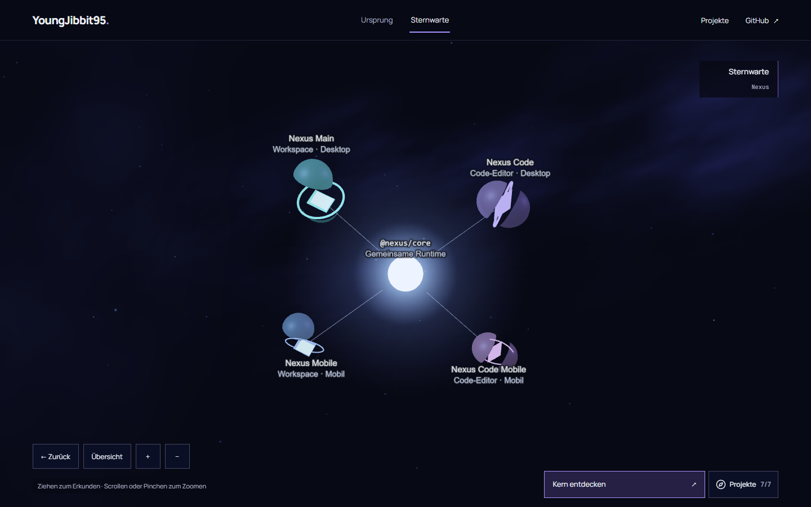
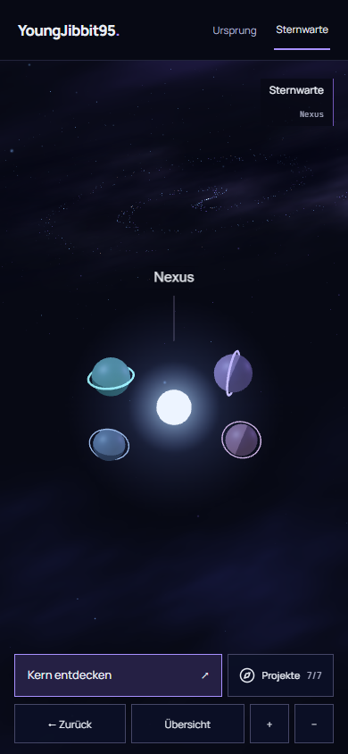
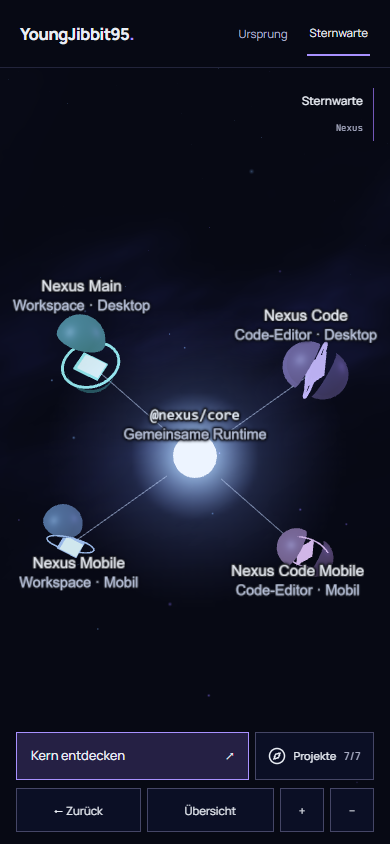

LIVING COSMOS · G2-D · 15. OKTOBER 2026
Nexus: ein Stern, vier Apps.
Der gemeinsame Runtime-Kern wird zum zentralen Stern. Vier unterscheidbare App-Welten öffnen sich bei echter Kameraannäherung und legen ihre Core-Verbindungen frei. Die Nebelraum-Basis bleibt erhalten.
Dies sind echte lokale Browseraufnahmen. Die Bilder zeigen die Vorschau; die visuelle Nutzerfreigabe steht aus. Kein G3, Merge oder Produktionsdeploy.
Redesign-Bericht und Prüfergebnisse · Sieben Projektidentitäten · Exploded-View-Vertrag · Vorheriger Bildstand
Desktop · 1440 × 900


Mobile · 390 × 844




Was die Öffnung erklärt
Nexus Main und Nexus Mobile sind die Workspace-Familie; Nexus Code und Nexus Code Mobile
die Editor-Familie. Alle vier verwenden @nexus/core. Körpergrößen und
Abstände sind kuratierte Gestaltung, keine Nutzungs- oder Leistungsmetriken. Die Linien
behaupten keinen laufenden Sync.